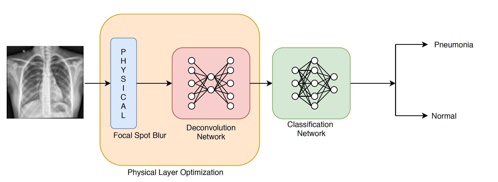
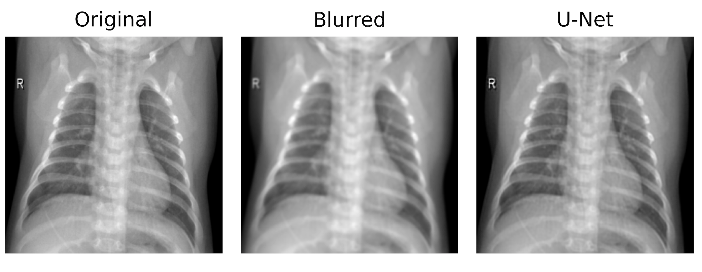

| Paper PDF |


|
Nowadays, the diagnosis of pneumonia is a stressful task all over the world. According to WHO, pneumonia kills about 2 million children every year and is thought as the leading cause of childhood mortality. To better protect our next generation, we may want our X-Ray images to be classified automatically to accelerate pneumonia detection and alleviate doctors' pressure. However, the X-Ray images are often affected by the focal spot blur effect caused by physical systems and that makes manual classification much harder. This project discusses the impact of focal spot blur effect on pneumonia detection by using X-Ray images and attempts to retrieve clear images. We simulate this blurring effect by convolving clear images with a gaussian kernel and thus, generate a smeared set for comparison. Then, VGG-16 models are trained on both sets separately. The result shows that the classification network can achieve similar test accuracy on both sets. In addition, a U-Net model is built to recover blurred images. These reconstructed images demonstrate the effectiveness of neural networks.
|
|
|
| Paper: |
Code and Data:
|